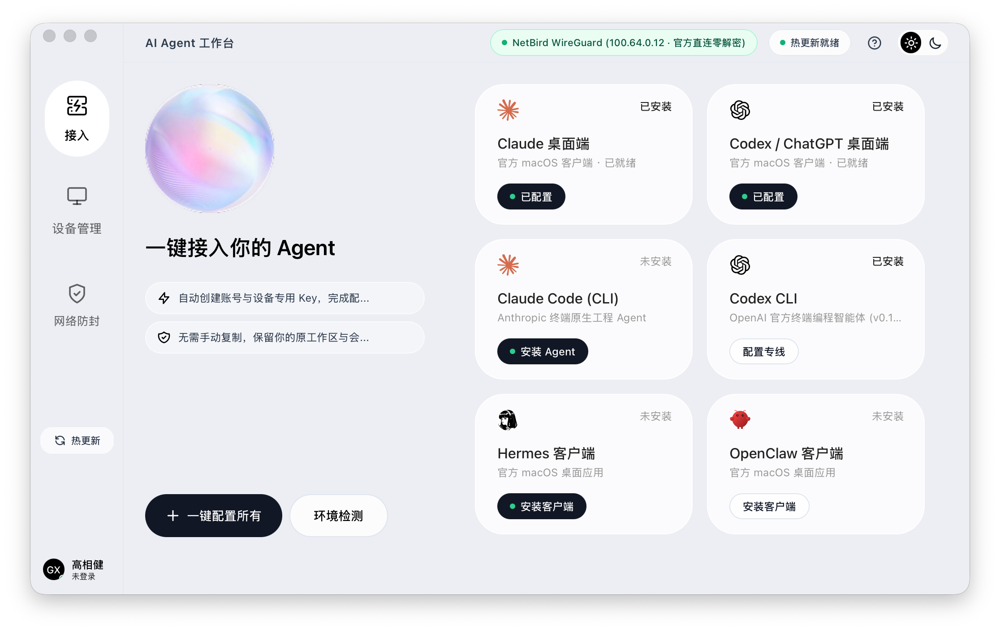

无需繁琐网络配置，杜绝国内 IP 封号风险。原生接管 Claude 桌面端、Claude Code、Codex 桌面端、Codex CLI、Hermes 与 OpenClaw，支持应用内一键热更新。

为 ToC 用户量身打造的专线体验
专为解决国内用户连接不稳定、海外大模型频繁风控封号而生。
内置 OTA 签名热更新引擎，发现新版本一键在应用内自动下载并无缝重启生效，告别重复下载 DMG 与 macOS Gatekeeper 隔离误报。
内置 WireGuard 零信任骨干专线，针对 Claude 与 OpenAI API 强制走海外纯净住宅节点，阻断 IPv6 旁路泄露，杜绝封号风控。
完美融合桌面应用与终端智能体。桌面客户端支持一键拉起唤醒，终端 CLI 工具（claude、codex）一键自动注入配置文件与网关。
客户高频 6 大主力工具一键接入
自动探测本地已安装的桌面端与 CLI 工具，一键注入海外专线加速与 Key 授权。
Anthropic 官方桌面应用，原生支持全仓项目交互与 MCP 工具扩展，专线加速直连防封。
Anthropic 官方终端智能体，擅长复杂工程代码理解与端到端自动化重构，专线即时注入。
OpenAI 官方 macOS 原生应用，集成 Canvas 协同画布与语音对话，由纯净专线代理接管出口。
OpenAI 官方终端编程终端，深度集成代码推理、补丁生成与调试，专线直连。
Nous Research 顶级开源自主推理智能体，具备长程链式规划与工具协同调用能力。
开源代码审查与多步自主架构重构引擎，具备严苛红队代码审查能力，开箱即用。
简单 3 步，立即开启专线加速
无需任何复杂网络教程，像使用日常 App 一样简单。
点击上方下载按钮获取 DMG 安装包，双击打开后将「AI Agent Hub」图标拖入「应用程序」文件夹。
在工作台选择您想使用的桌面端（如 Cherry Studio 或 ChatGPT），点击主卡片上的「配置专线」按钮。
配置完成后按钮自动变为「已配置」，点击按钮可直接在系统中拉起唤醒该桌面端，即刻畅享极速生成。
常见问题解答
完全可以！AI Agent Hub 专为广大普通消费者与日常办公人员（如自媒体文案、电商美工选品、外贸翻译等）设计。所有操作均为图形界面一键点击，彻底告别命令行输入与环境调试。
Anthropic (Claude) 与 Google (Gemini) 对中国大陆地区的 IP 探测极其严苛，普通用户直连哪怕网络稍有波动都会触发 403 封锁或账号永久封禁。为了对用户的资金与账号资产负责，我们优先精选对中国 IP 零风控的 ToC 桌面主力阵容（Cherry Studio、Chatbox、Kimi 等）。
不需要。AI Agent Hub 内置了官方 NetBird WireGuard 海外纯净加速骨干专线，直连官方机房出口，开箱即用，无需您再四处寻觅翻墙节点或配置繁杂的 Clash 规则。
Windows 桌面版与跨端同步功能目前已在封闭内测中，预计将于近期推送。届时同一云端设备密钥可在 Mac 与 Windows 间平滑同步。